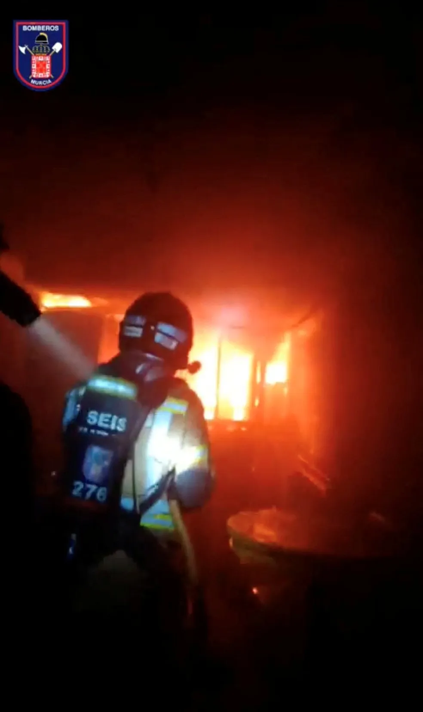

Espanha
Incêndio em boates deixa 13 mortos na Espanha

13 pessoas morreram em um incêndio que atingiu um complexo de boates na cidade de Múrcia, no sudeste da Espanha, de acordo com os serviços de emergência locais.
O local conta com 3 casas noturnas (Teatre, La Fonda e Golden). O incêndio atingiu todas elas.
Ainda segundo as autoridades, o incêndio começou na madrugada deste domingo (1º) na boate Teatre.
Diego Seral, da Polícia Nacional da Espanha, disse aos repórteres que os mortos foram encontrados na boate Fonda, uma das três casas noturnas vizinhas, que sofreu a maior parte dos danos causados pelo fogo, incluindo o desabamento do telhado, acrescentou.
Uma porta-voz da boate Teatre, Maria Dolores Albellan, disse aos repórteres que o incêndio teve origem no clube vizinho, La Fonda, antes de se espalhar para os dois clubes vizinhos.
A mídia espanhola diz que várias comemorações de aniversário estavam acontecendo no momento da tragédia.
